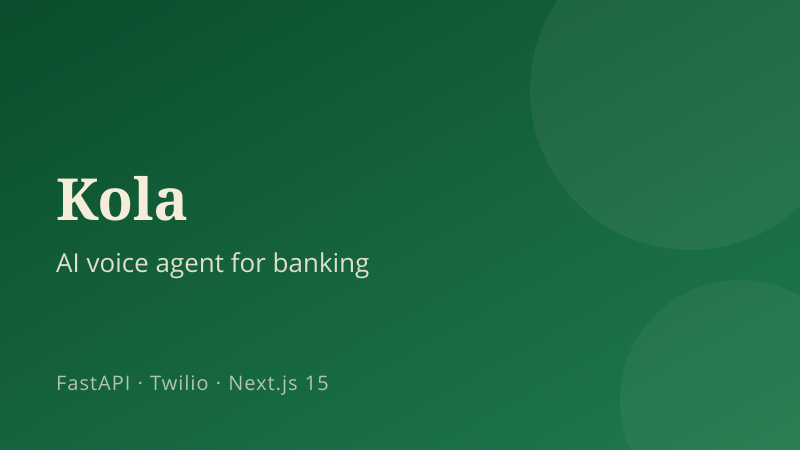
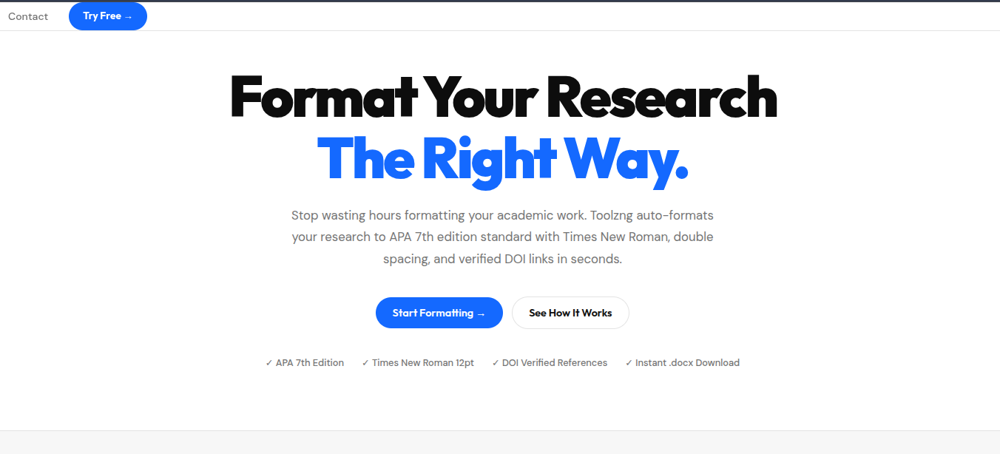
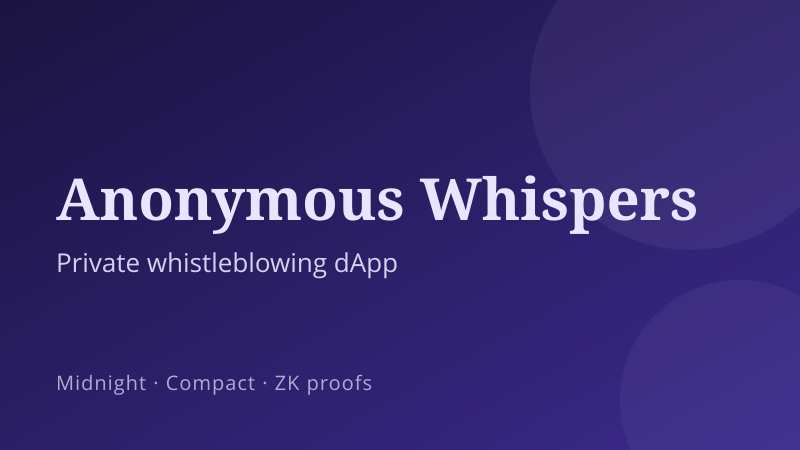
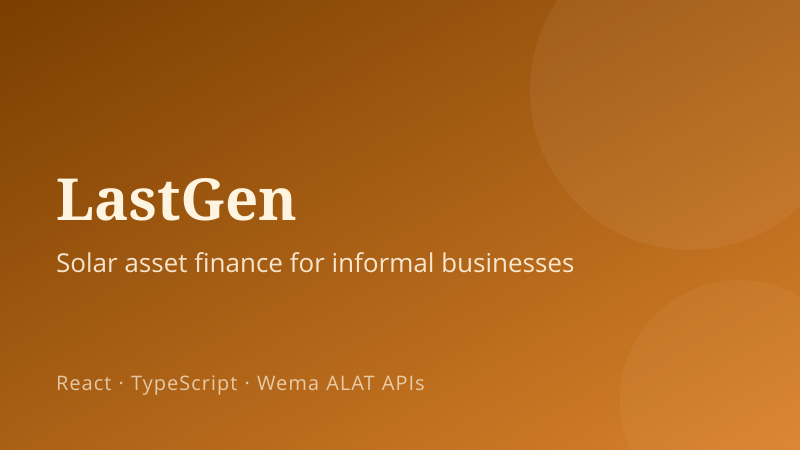
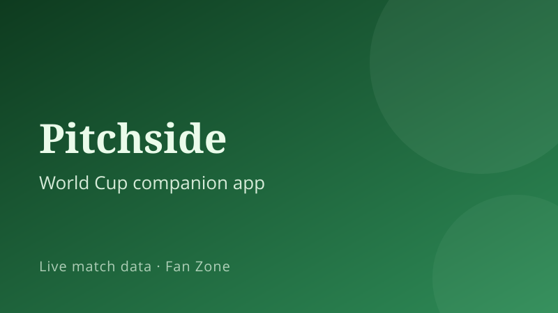
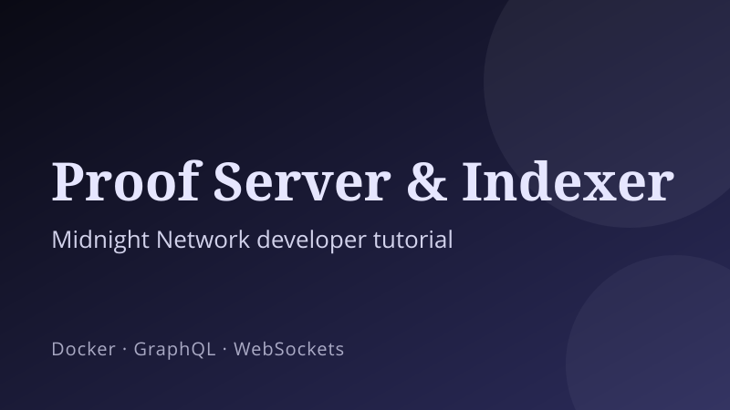

Products I have designed, built, and shipped, from solo production platforms to hackathon builds I led or contributed to.

Kola, AI Voice Agent for Banking
An AI voice agent that calls bank customers back on their phones and walks them through support in clear Nigerian English. Plugs into a bank's API through a six-function tool contract, with BMONI as the reference integration. FastAPI and Twilio on the backend, Next.js 15 dashboard with a live call transcript. Built for the Learn2Earn x BMONI "Hack the Future" hackathon (September 2026).

Toolzng, Academic Formatter
A live academic-research formatting platform for Nigerian students, built and deployed solo. Go backend, a Python document-generation service, and a custom responsive frontend, running in production on Render with Umami analytics. Handles APA 7th Edition formatting and verifies DOIs against Crossref.

Anonymous Whispers, Private Whistleblowing dApp
A privacy-preserving whistleblower dApp built for the Midnight Network Builder Challenge on Rise In, using zero-knowledge proofs and the Compact smart contract language. Two-way encrypted reporting with reporter and organization inboxes using curve25519 public-key encryption.

LastGen, Solar Asset Finance (Team Lead)
Led a 4-person team at Wema Hackaholics 7.0 building asset-finance infrastructure that lets a bank underwrite solar for Nigeria's informal businesses. Owned the scaffolding, design system, and all four product surfaces, and set the frontend/backend API contract so both sides could build in parallel.

Pitchside, World Cup Companion (In Progress)
A live World Cup companion app in active development for a Superteam/TxODDS hackathon. It features a reactive animated pitch, real-time match alerts, momentum meters, and a multiplayer Fan Zone.

Midnight Network, Proof Server & Indexer Tutorial
Won the Midnight Eclipse Content Bounty (issue #308) with a developer tutorial on running Midnight's Proof Server and Indexer: Docker setup, version matching, GraphQL queries, real-time WebSocket subscriptions, and the indexerPublicDataProvider pattern for dApps.
Verbatim, AI Transcription App
Contributed frontend work to Verbatim (verbatim.site) during the Learn2Earn NG fellowship, working inside an existing React, Vite, Tailwind, and Firebase codebase alongside a senior engineer and shipping reviewed changes.
Open Source
Contributions to external repositories through reviewed pull requests and co-authored commits, earning the GitHub Pull Shark, Pair Extraordinaire, and Quickdraw achievements.
Backend and algorithmic groundwork in Go through the Zone01 curriculum, covering data structures, concurrency, and systems programming. Representative project: ascii-art-web.